Élan · Site créé avec l'IA
Site de la salle de sport Élan : 8 pages, versions ordinateur et mobile, réalisé avec l'intelligence artificielle.

Le projet
Nouveau site pour Élan, salle de sport multi-activités à Paris (boxe, HIIT, cardio, renforcement, Pilates, yoga). Huit pages : Accueil, Nos activités, Planning, Tarifs, Coachs, Actualités, Contact et Mentions légales, pensées pour l'ordinateur et le mobile. Objectif : donner envie de réserver une première séance.
Mon rôle
Cheffe de projet : j'ai piloté l'IA de A à Z. J'ai défini les pages et les contenus, choisi les photos de la salle et l'ambiance, fait respecter la charte « Énergie urbaine », puis testé chaque page et demandé les corrections jusqu'au résultat final.
Outils
Claude (IA) pour la création des pages · charte « Énergie urbaine » (bleu nuit, corail, bordeaux) · typographies Barlow et Barlow Condensed · tests ordinateur et mobile.
Ma démarche
Du cahier des charges au site final, en huit étapes.
- 1
Le cadrage
Reprendre les besoins de la cliente et la charte « Énergie urbaine » : mouvement, liberté, progression.
- 2
L'arborescence
Définir les huit pages et le parcours du visiteur jusqu'à la réservation d'une séance d'essai.
- 3
Les contenus
Activités, coachs, planning, tarifs, actualités : des textes courts et motivants, adaptés à la cible.
- 4
Les visuels
Choisir les photos de la salle (espace boxe, plateau HIIT, studio yoga) et les dégradés sur les photos.
- 5
Les pages interactives
Planning filtrable par activité et par coach, questions fréquentes sur les tarifs, formulaire de contact.
- 6
Le mobile
Une version mobile pour chaque page, avec un menu qui s'ouvre et se ferme.
- 7
Les ajustements
Alléger l'accueil, déplacer la nutrition dans les actualités avec un article « comment bien manger », revoir les couleurs.
- 8
La recette
Tester chaque page sur ordinateur et sur mobile, noter les problèmes et les faire corriger.
Parcourir le site
Choisis une page et fais défiler l'écran pour la parcourir, en version ordinateur ou mobile.
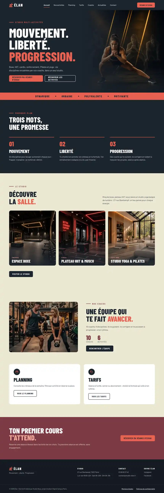
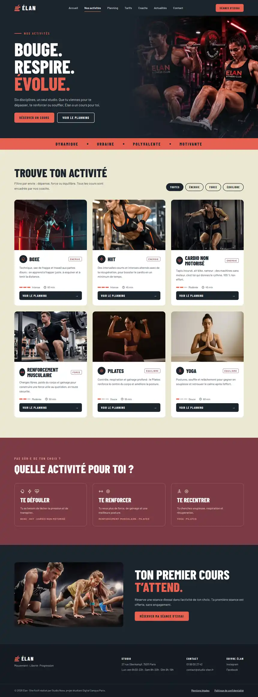
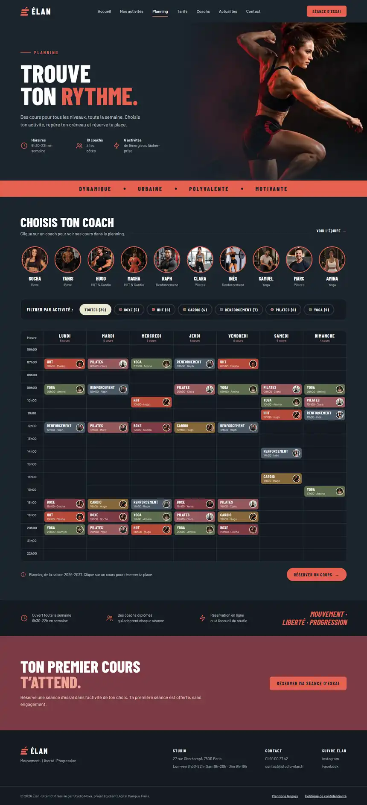
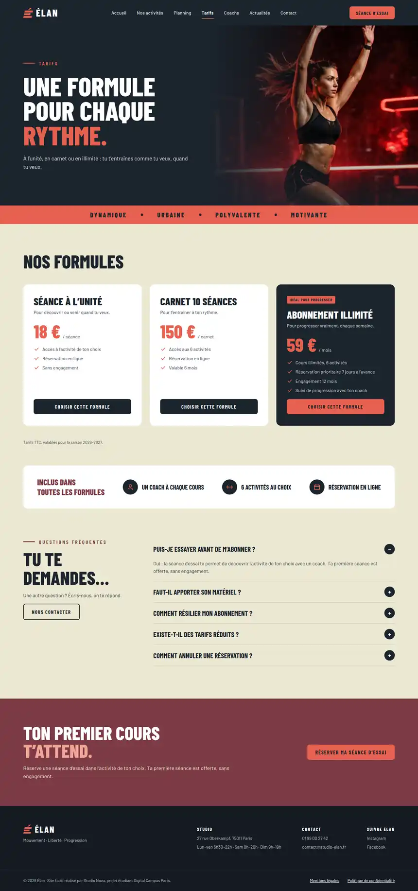
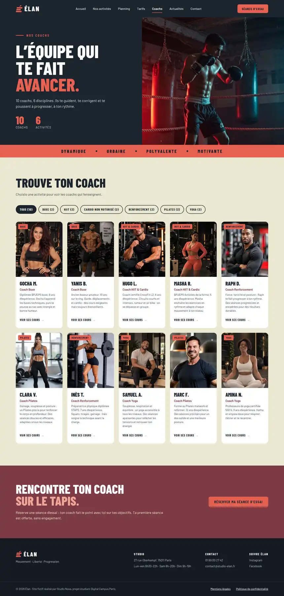
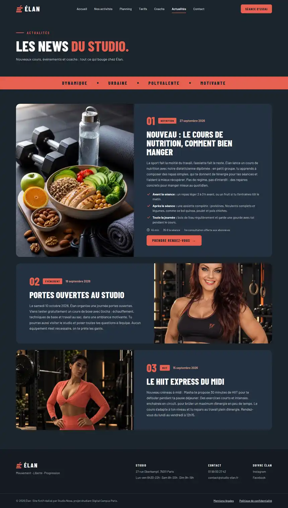
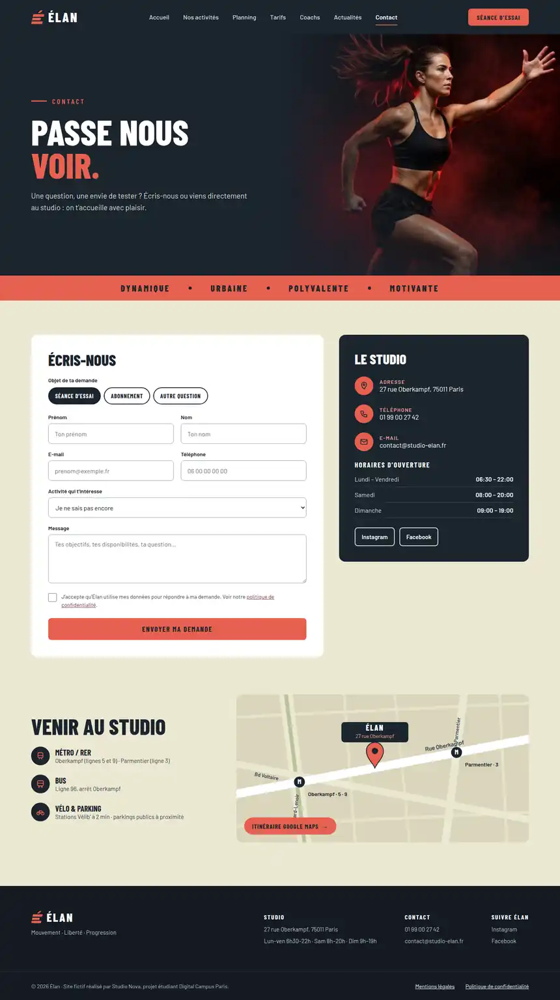
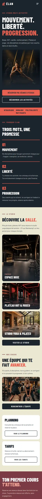
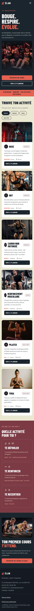
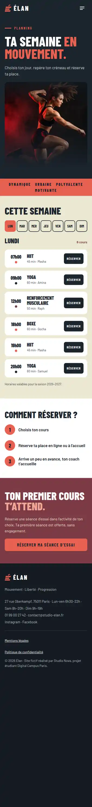
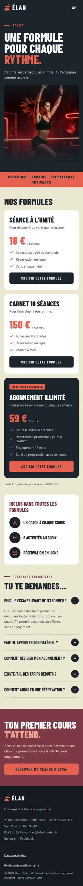
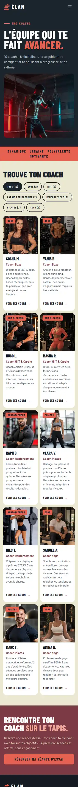
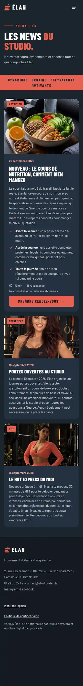
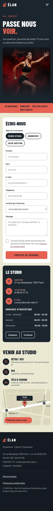
Comment ça marche sur mobile
Six gestes clés du visiteur sur téléphone. Clique sur une étape pour la voir.
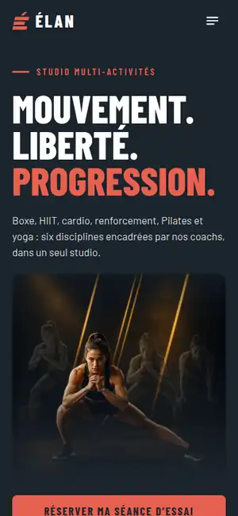
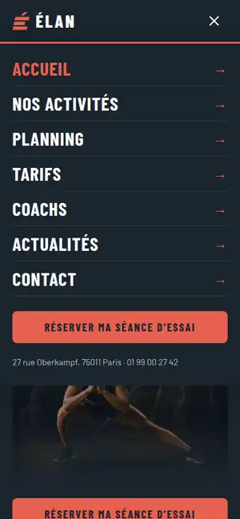
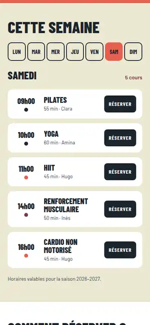
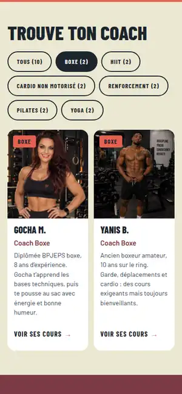
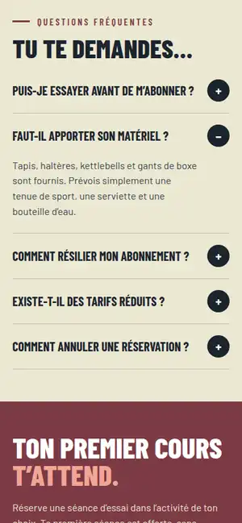
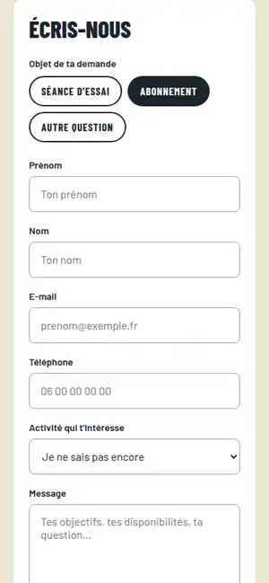